-
ТМКЩ
На любом производстве оборудование нуждается в укреплении опорных неподвижных конструкций, сглаживании вибраций в процессе работы механизмов, предотвращении трения металлических деталей, отбойниках и смягчителях вероятных ударов. -
МБС
Технические пластины МБС производятся в виде листов разной толщины. Так же, как и технические пластины ТМКЩ, технические пластины МБС могут быть резиновыми или резинотканевыми. Изделия изготавливаются в полном соответствии с ГОСТом -
АМС
Основное назначение изделия – прокладочный материал. АМС производят из качественных сортов резины, препятствующей трению неподвижных деталей машин и механизмов. Технические пластины компенсируют ударные нагрузки, используются как уплотнители узлов, работающих под давлением. -
УМ
Резиновые материалы этого типа выпускают для неподвижных соединений и изоляции в электрических устройствах, трансформаторах, распределителях высокого напряжения любого климатического исполнения. Техпластина трансформаторная производится путем вулканизации резины с латексными и каучук содержащими материалами.
Виды техпластин
О продукте:
Назначение:
Наша компания предлагает высококачественные техпластины, которые могут удовлетворить потребности в различных отраслях промышленности. Позвольте нам рассказать о том, почему наши техпластины так важны для вашего производства.
Первое, что необходимо учитывать, это то, что техпластины являются неотъемлемой частью большинства конструкций и оборудования, используемых в промышленности. Они могут использоваться для соединения различных элементов, обеспечивая жесткость и прочность всей конструкции. Без надежных техпластин ваше производство может столкнуться с проблемами, связанными с неустойчивостью конструкции и возможными повреждениями оборудования.
Кроме того, использование наших техпластин может повысить производительность вашего производства, уменьшить риск аварий и снизить затраты на ремонт и замену оборудования. Надежные техпластины обеспечивают долговечность конструкций, что в свою очередь увеличивает их эффективность и продуктивность.
Наша компания предлагает широкий ассортимент техпластин различных размеров и форм, изготовленных из высококачественных материалов. Мы гарантируем качество наших изделий и конкурентные цены. Если вы ищете надежного поставщика техпластин, обратитесь к нам - мы с удовольствием поможем вам решить все ваши потребности в этой области.
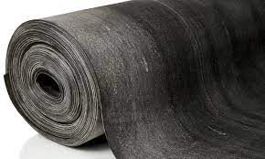
АМС
Атмосферомаслостойкие
Техпластины АМС изготавливаются 2-х видов:
1 класса - техпластина АМС толщиной от 1,0 до 20,0 мм, предназначена для производства резино-технических изделий, служащих для уплотнения узлов, работающих под давлением свыше 0,1 МПа;
2 класса - техпластина АМС толщиной от 1,0 до 60,0 мм, предназначена для изготовления резино-технических изделий, служащих для уплотнения узлов, работающих под давлением до 0,1 МПа, для предотвращения трения между металлическими поверхностями, а также для восприятия одиночных ударных нагрузок или в качестве подкладок, настилов;
Виды техпластин:
Ф-формовая техпластина АМС, изготовленная методом вулканизации в пресс-формах на вулканизационных прессах;
Н-неформовая (рулонная) техпластина АМС, изготовленная методом вулканизации в котлах, а также на вулканизаторах непрерывного действия.
Типы техпластин:
I-резиновая пластина;
II-резинотканевая пластина.
Степени твердости:
М-мягкая (АМС-М);
С-средняя (АМС-С);
Т-твердая (АМС-Т).
Основные параметры пластины АМС в зависимости от условий эксплуатации:
| Класс | Вид | Тип | Степень твердости | Температурный интервал, ℃ | Рабочая среда |
| 1;2 | Ф; Н | I; II | М | От -30 до +180 | Атмосферный воздух, емкости, помещения, сосуды; азот; инертные газы при давлении от 0,05 до 0,4 Мпа или масла на нефтяной основе при давлении от 0,05 до 10,0 МПА |
| М1 | От -40 до +80 | ||||
| С | От -30 до +80 | ||||
| С1 | От -40 до +80 | ||||
| Т | От -30 до +80 | ||||
| Т1 | От -40 до +80 |
Примеры условного обозначения пластины:
Пластина 1 класса, вида Ф, типа I, марки АМС, степени твердости С, толщиной 10 мм, размером 720х720 мм: Пластина 1Ф-1-АМС-С-10 720х720 мм ГОСТ 7338-90;
Пластина АМС, 2 класса, неформовая, резиновая, степени твердости С1, толщиной 5 мм: Пластина 2Н-1-АМС-С1-5 ГОСТ 7338-90.
Пластина 2 класса, вида Н, типа II, марки АМС, степени твердости С, с одной тканевой прокладкой, толщиной 2 мм: Пластина 2Н-II-АМС-С-1 х 2 ГОСТ 7338-90.
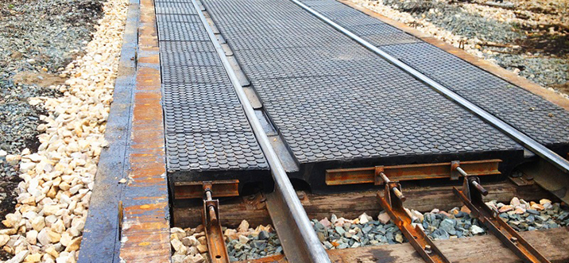
Ж/Д настилы
Настилы для перехода пешеходов / резинокордовые
НАСТИЛЫ ДЛЯ ПЕРЕХОДА ПЕШЕХОДОВ ЧЕРЕЗ ЖЕЛЕЗНОДОРОЖНЫЕ И ТРАМВАЙНЫЕ ПУТИ
Пересечение пешеходных дорог с железнодорожными или трамвайными путями, для всех участников движения, являются объектами повышенной опасности. Для обустройства переездов с соблюдением Правил технической эксплуатации железных дорог РФ, Правил дорожного движения РФ и Правил пользования автомобильными дорогами РФ предлагаем все виды пешеходных переходов по всем ТУ утверждённым Департаментом пути и сооружений ОАО РЖД. Все пешеходные переходы делятся на резинокордовые и резиножелезобетонные. Резиновая поверхность всех плит обладает противоскользящими свойствами, при этом в зимний период на них не будет образовываться ледяная корка. Плиты легко монтируются и просты в эксплуатации.
Резиножелезобетонные переходы
Основными элементами настила резиножелезобетонного перехода являются: плиты внутренние (ПЖДвк; ПЖДвс;, ПЖДВ-П) укладываются между рельсами и плиты наружные (ПЖДнк ; ПЖДнс; ПЖД-П) укладываются с наружи от рельсов. Настилы для пешеходных переходов состоят из монолитных двухслойных плит с толщиной верхнего резинового слоя 70мм. и нижнего армированного железобетона 120мм. Ширина плит для перехода 1,6м. или 1,3м. Чтобы создать целостный, безопасный и комфортабельный переход для пешеходов через несколько железнодорожных путей с общим одноуровневым рифленым резиновым покрытием, используются комплекты пешеходных настилов. Для перекрытия межпутного расстояния применяются специальные плиты-вставки ПВ-2(1,3м.), ПВ-3(1,6м.), ПВ-4(2,27м.), изготовленные по такой же технологии, как и пешеходный переход. Оставшиеся зазоры (щели) между плитами заделываются с помощью резиновых элементов РЭП с крепёжными стержнями.
Наименование детали Размер детали, мм Количество штук Вес детали, кг
Плита внутренняя ПЖДВс 1600х1580х200 1 800
Плита наружная ПЖДНс 1600х800х400 2 450
Полоса резиновая 5х80х1600 2 для наружных плит, ж.б. шпалы
Полоса резиновая 15х80х1600 2 для внутренних плит, ж.б. шпалы
Полоса резиновая 35х80х1600 2 для наружных плит, дер. шпалы
Полоса резиновая 20х80х1600 2 для внутренних плит, дер. шпалы
Комплектация пешеходного настила 1,3м. по ТУ 2539-008-05768071-10
Наименование детали Размер детали, мм Количество штук Вес детали, кг
Плита внутренняя ПЖДВк 1300х1580х200 1 650
Плита наружная ПЖДНк 1300х800х400 2 380
Резинокордовый настил для ж/д переезда широко используется при одноуровневом пересечении рельсового полотна с трамвайными колеями и автодорогами. Эту продукцию ВСП применяют на переездах путей со стандартным рельсовым полотном, установленным на шпалах из железобетона или дерева с разнообразными видами крепежа.
Назначение и преимущества
Современные резинокордовые настилы железнодорожных переездов уводят воду от рельсового полотна и способствуют увеличению коэффициента сцепления колес автотранспорта с поверхностью переезда, что важно в зимнее время и в дождливую погоду. Кроме того, такой настил имеет целый ряд преимуществ, среди которых:
-Смягчение нагрузки ударного характера и частичное гашение вибрационного воздействия, возникающего при движении автотранспорта;
-Защита рельс от загрязнений, благодаря плотности прилегания к путям;
-Увеличение срока эксплуатации верхней конструкции путей в местах их пересечения с автодорогами и трамвайными рельсами.
Качественные настилы обеспечивают комфортность и безопасность одноуровневого пересечения автомобилями железнодорожных или трамвайных линий. Срок службы данных ВСП составляет 15-25 лет в широком диапазоне рабочих температур.
Изготовление настилов производится в соответствии с техническими условиями, а переезд заданной ширины подбирается соответствующим набором плит, кратно 0,546 метров.
ТУ32ЦП828-97, резинокордовые плиты кратно 0,546м.
Переезд нужной ширины набирается соответствующим количеством плит, кратно 0,546м.
Название детали Размеры, мм, мм Кол-во штук в компл. (ж/б шпалы) Кол-во штук в компл. (деревянные шпалы) Вес 1 детали, кг.
Плита внутренняя 1582x546x213 1 1 199
Плита наружная 573x546x213 2 2 70
Прокладка наружная 182x546x48 2 2 4
Прокладка внутренняя 1098x546x55 1 - 38
Комплект узлов крепления 1 1 238
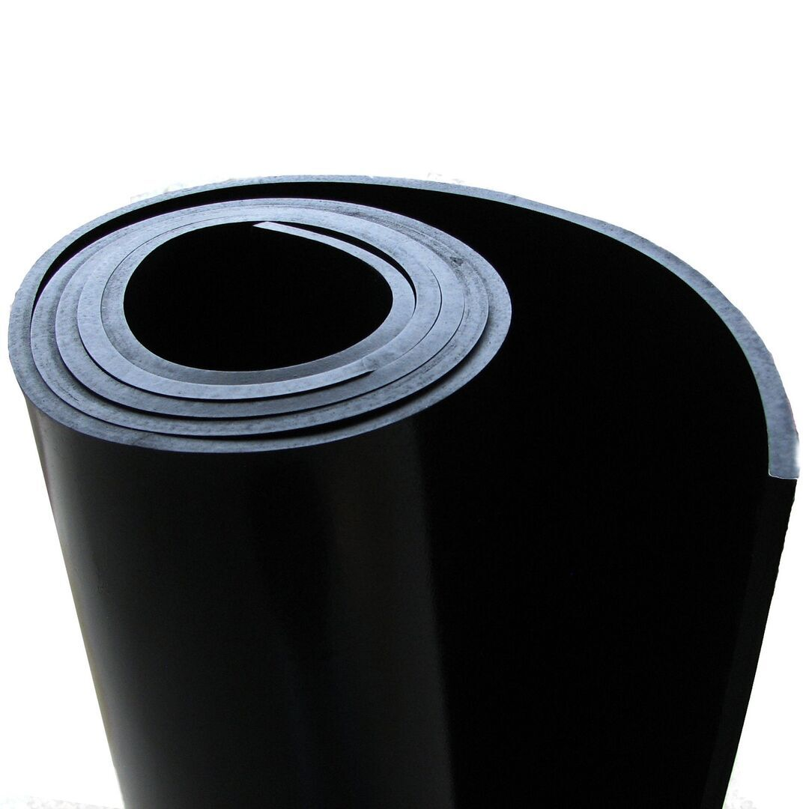
МБС
Маслобензостойкая
Пластина маслобензостойкая (МБС), представляет собой листовой материал из резины, устойчивый к воздействиям влаги, атмосферных факторов, но и к воздействию агрессивных сред (нефтепродукты-масла, бензин, нефтяные растворители, керосин
Условия эксплуатации:
Воздух помещений, емкостей сосудов; инертные газы при давлении от 0,05 до 10,0 Мпа; азот.
Пример условного обозначения:
2Н-I-МБС-С-4/ III-2-80 ГОСТ 7338-90
Классы техпластин:
1 класс-пластина толщиной от 1,0 до 20,0мм, предназначенная для изготовления резинотехнических изделий, служащих для уплотнения узлов, работающих под давлением свыше 0,1 Мпа;
2 класс-пластина толщиной от 1,0 до 60,0 мм, предназначенная для изготовления резинотехнических изделий, служащих для уплотнения узлов, работающих под давлением до 0,1 Мпа, для предотвращения трения между металлическими поверхностями, а также для восприятия одиночных ударных нагрузок или в качестве прокладок, настилов.
Виды техпластин МБС:
Ф-формовые пластины, изготовленные методом вулканизации в пресс-формах на вулканизационных прессах;
Н-неформовые пластины, изготовленные методом вулканизации в котлах, а также на вулканизаторах непрерывного действия.
Типы техпластин:
I-резиновая пластина;
II-резинотканевая пластина (с одним или несколькими тканевыми слоями).
Твердость техпластин МБС (по методу Шора):
М-мягкая (40-50);
С-средняя (55-70);
Т-твердая (повышенная), (70-90).
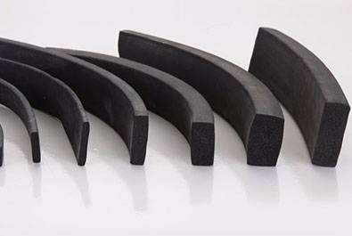
Неформовые изделия из ТМКЩ
Вакуумные трубки и шнуры / Пластина неформовая резиновая / Шнуры круглого и прямоугольного сечения
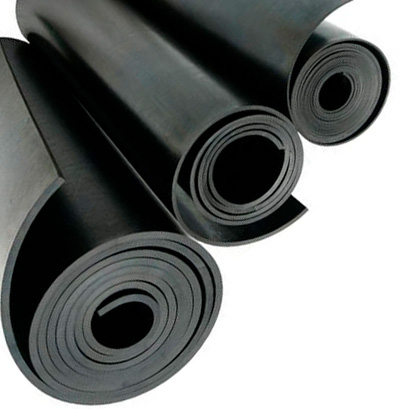
Пористая
Разновидность резины, используемая в машиностроении для создания уплотнительных компонентов разнообразных соединений
Применение: Техпластина используется для изготовления вырубным способом деталей, предназначенных для использования в качестве амортизаторов в машиностроении, самолётостроении, а также для уплотнения различного вида соединений.
Рабочая среда: воздух, пыль, брызги воды
Внешний вид: цвет черный, на поверхности слабый отпечаток от пресс-формы в виде клеток или полосок
Физико-механические показатели:
Сопротивление сжатию, МПа, не более:
при 25% сжатия: 0.30
при 50% сжатия: 0.50
Относительная остаточная деформация при сжатии на 50% при t° 23±5°С, %, не более: 15
Коэффициент старения при 90°С в течение 72 ч, не более: 2.0
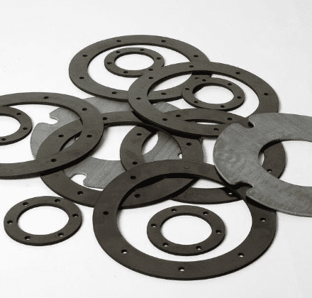
Прокладки для фланцев
Уплотнения фланцев используются для создания статического уплотнения между двумя поверхностями фланцев при различных условиях эксплуатации, с различными значениями давления и температуры.
Надёжность фланцевых соединений по большей степени определяется наличием и качеством прокладки между фланцами ГОСТ 33259-2015, взамен ГОСТ 12815, 12820, 12821, 54432. Прокладки для фланцевых соединений являются соединительным элементом, который легко сжимается. Пребывая в сжатом состоянии между отдельными частями трубопровода, в результате давления крепёжных затянутых деталей, фланцевая прокладка герметично заполняет пространство между соединёнными изделиями.
Условно прокладки для фланцевых соединений в соответствии с используемым материалом делятся на:
- металлические (овального сечения и восьмиугольного сечения, линзовые);
- неметаллические (паронит, картон, фторопласт);
- комбинированные (спирально-навитые прокладки, прокладки типа «Графлекс» из терморасширенного графита, прокладки графитофторопластовые)
При создании различных трубопроводных сетей широко используются неметаллические фланцевые уплотнители, изготовленные из листовых материалов соответствующие ГОСТ 28759.6-90
Уплотнители могут использоваться в самых разных сферах: трубопроводы с ними применяются в коммунальном хозяйстве, нефтегазовой отрасли, химической промышленности и т. д. Самые востребованные материалы для изготовления фланцевых уплотнений и прокладок является листовой паронит армированный, маслобензостойкий и общего назначения на основе хризотилового асбеста, резиновые техпластины (ТМКЩ, МБС, резинотканевые, пористые), фторопласт (пластины, стержни).
Изготавливаем прокладки из листового паронита ГОСТ 481-80 следующих марок: Паронит общего назначения ПОН, Паронит маслобензостойкий ПМБ, ПМБ-1, Паронит кислотостойкий ПК, Паронит армированный сеткой ПА, Паронит электролизерный ПЭ, ПОН-А, ПОН-Б, ПОН-В, ВАТИ-22 безасбестовый паронит с другими толщинами: 0,5 мм, 0,6 мм, 0,8 мм, 1,0 мм, 1,5 мм, 2,0 мм, 3 мм, 4 мм, 5 мм, 6 мм, фигурные, прокладки с язычком, в том числе с монтажным хвостом (монтажным ухом), прокладку под кронштейн для фасадных систем.
Прокладки паронитовые ПОН, ПМБ типа А, Б, В, Г, Д применяются как уплотнительный материал фланцевых соединений по ГОСТ 33259-2015 (12815-80) исполнения 1-5, 8, 9 в трубопроводах с давлением до 20 МПа, Ду 10 - 3000 мм.
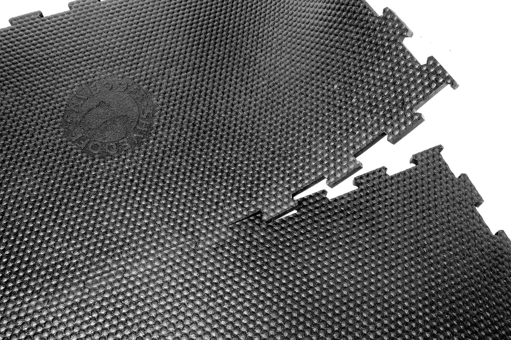
Резиновые маты для КРС
При обустройстве помещений для содержания крупного рогатого скота (КРС) особое внимание следует уделить напольному покрытию, поскольку именно на пол приходится ежедневная нагрузка.
Правильно обустроенное место для коров — одно из основных условий их здоровья и производительности. Именно поэтому резиновые коврики в качестве подстилок получают все большую популярность в животноводческой отрасли. Маты из резиновой крошки признаются животноводами наиболее прочным и удобным покрытием полов загонов и помещений для содержания скота.
Покрытия представляют собой двухслойную систему, состоящую из износостойкого верхнего слоя и особенно мягкого и комфортного внутреннего слоя. Внутренняя плита состоит из вторично вспененного пенополиуретана, Против возможного проникновения влаги внутренний слой надежно закрыт полиэтиленовой пленкой. Прочный верхний материал выполнен из рулонное резиновое покрытие толщиной 4 мм армированной нитью и является водонепроницаемым, износоустойчивым и нетоксичным. Благодаря специальному протектору посыпной материал, например, порошок из соломы, хорошо задерживается на верхней поверхности матраса.
Характеристики
Резиновый настил для КРС отличается рядом привлекательных характеристик. В их числе:
- превосходная теплоизоляция, защищающая от холода;
- наличие противоскользящего эффекта, обеспечивающего безопасность животных;
- амортизирующее действие, смягчающее нагрузку на ноги и особенно суставы животных;
- способность длительное время без деформации выдерживать серьезные точечные нагрузки (от копыт);
- простота укладки настила и ухода за ним;
- экологичность, благодаря которой здоровью коров не наносится вред;
- долгий срок эксплуатации за счет высокой износостойкости, обеспеченной технологиями изготовления настилов из крошки.
Наличие настолько серьезных достоинств делает коврики для коров все более популярным материалом.
Достоинства
Коврики из резиновой крошки, сочетают преимущества изделий из ЭВА (вспененного этиленвинилацетата) и стандартной резины. К плюсам можно отнести:
- комфорт для коров, которые на такой подстилке чувствуют себя в естественной среде;
- способность подстраиваться под тело коровы;
- увеличение лежкоспособности — корова отдыхает на два часа больше, чем обычно;
- невысокий уровень теплопроводности, более низкий относительно цельнолитой резины;
- широкий диапазон толщины покрытия — 10-40 мм;
- разнообразный цвет матов;
- способность оптимально распределять нагрузки на копыта;
- долговечность даже при интенсивном применении, обеспеченная характеристиками резиновой крошки и скрепляющих ее материалов;
- эластичность на протяжении всего срока эксплуатации и при любых температурах;
- способность за счет своих качеств понижать до минимума риск развития простудных патологий, болезней суставов и мастита.
Животные чувствуют себя комфортно, если полы стойла закрывают специальные маты для КРС, поэтому охотно направляются на свои места.
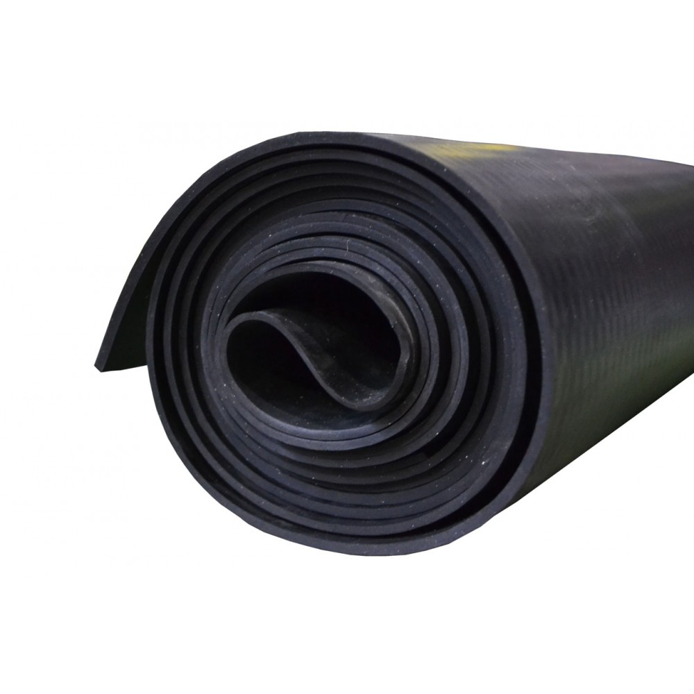
ТМКЩ
Тепломорозокислотощелочестойкая техпластина, которая отличается стойкостью
Пластины ГОСТ 7338-90 применяются для изготовления резиновых изделий, служащих для уплотнения неподвижных соединений, предотвращения трения между металлическими поверхностями, для восприятия одиночных ударных нагрузок, а также в качестве прокладок и настилов.
ТМКЩ-это тепломорозокислотнощелочестойкая техпластина, которая отличается стойкостью под воздействием воздуха, инертных газов, азота, солевых растворов, пресной и морской воды, прекрасно ведет себя в кислотной и щелочной среде и выдерживает температуру от -45°С. до +80°С. Изделие может выдержать давление до 0,1 МПа.
Типы
- резиновая;
- резинотканевая, этот тип считается более выносливым, так как имеет одну или несколько тканевых прослоек. Согласно ГОСТу 7338-90 на каждые 2мм, имеется одна тканевая прослойка.
В зависимости от метода, который используется в процессе производства изделия, пластина может быть формовой и неформовой. Первый вид получается в результате вулканизации в пресс-формах на вулканизационных прессах. Второй вид-в результате аналогичного процесса, только не под прессом, а в котлах или вулканизаторах непрерывного действия.
Марка ТМКЩ-С- тепломорозокислотнощелочестойкая, средней твердости: воздух помещений, емкостей, сосудов; азот; инертные газы при давлении 0,05 до 0,4 МПа или вода пресная, морская, промышленная, сточная без органических растворителей и смазочных веществ; раствор солей с концентрацией до предела насыщения; кислоты, щелочи концентрацией до 20% при давлении от 0.05 до 10.0 МПа.

УМ
Описание 3
Дополнительная информация о карточке 3.
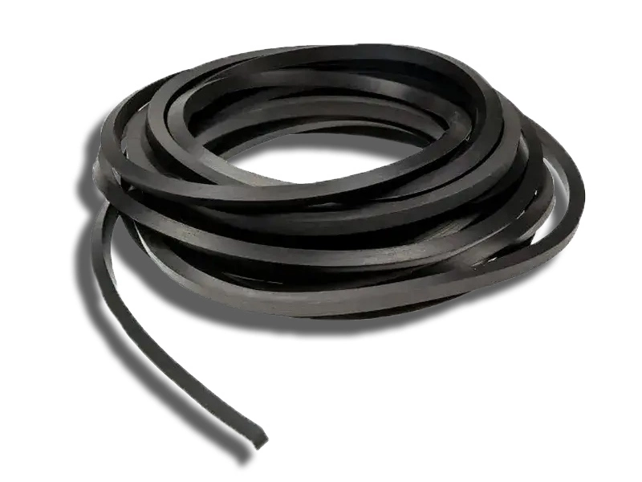
Шнуры прямоугольного сечения
предназначены для уплотнения неподвижных разъемных соединений с давлением рабочей среды до 1,0 МПа; Используются для защиты полостей от пыли и грязи
Предназначение резинового шнура (ГОСТ 6467-79) заключается в уплотнении разъемных соединений конструкций и механизмов, предотвращая их повреждение и продлевая срок эксплуатации изделий за счет обеспечения защиты от загрязнений и влаги. Такие уплотнители рассчитаны на активную работу при давлении рабочей среды до 0,5 Мпа.
Подобные шнуры изготавливаются из разнообразных резиновых смесей и подходят для использования во всевозможных условиях среды. Изделия по ГОСТ 6467-79 изготавливаются из натурального или синтетического каучука. В процессе производства в составы добавляют разнообразные примеси, которые влияют на характеристики готового продукта. Резиновые шнуры находят свое применение в области народного хозяйства, в различных сферах промышленности и медицине. Также подобная продукция очень популярна в бытовом использовании.
В зависимости от условий эксплуатации шнуры разделяют по:
- степени твердости: малая, средняя, повышенная;
- форме сечения: круглые, прямоугольные;
- степени назначения:
| Тип | Название | Температура, °С | Рабочая среда |
| 1 | шнур резиновый кислотощелочестойкий | от -30 до +50 | растворы кислот и щелочей до 20% (за исключением азотной и уксусной кислот), вода, воздух и инертные газы |
| 2 | шнур резиновый теплостойкий | от -30 до +140 | воздух, азот и инертные газы (до +90 °С), водяной пар (до +140 °С) |
| 3 | шнур резиновый морозостойкий | от -45 до +50 | воздух, азот и инертные газы |
| 4 | шнур резиновый маслобензостойкий | от -30 до +50 | масло, бензин |
| 6 | шнур резиновый пищевой | от -30 до +50 | в соприкосновении с пищевыми продуктами |
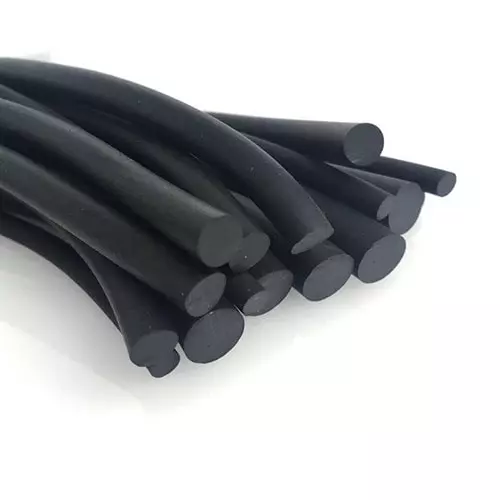
Шнуры резиновые круглые
Они предназначены для уплотнения неподвижных соединений машин, конструкций, резервуаров.
Диаметр: 4 мм (± 0.4мм)
Группа: 1 - для работы с давлением рабочей среды до 0.5 МПа
Тип: 1 – кислотощелочестойкие (растворы кислот и щелочей массовой долей до 20% (за исключением азотной и уксусных кислот), вода, воздух и инертные газы)
Работоспособен при t° от -30°С до +50°С
Степень твёрдости: С – средняя (55-70 единиц Шора А)
Продукция не подлежит обязательной сертификации.
Вес 1 п.м.: ~ 15 гр
Минимальная партия: 1 бухта (вес 1 бухты ~ 20-30 кг)
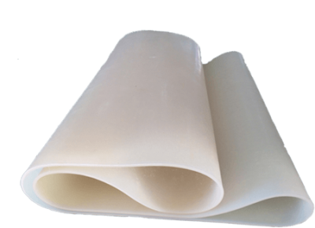
Cиликоновая
Используется для изготовления различных типов уплотнений и прокладок. Отлично переносит перепады температур в широком диапазоне, ударопрочная и долговечная.
Применение: Техпластина используется для изготовления вырубным способом деталей, предназначенных для использования в качестве амортизаторов в машиностроении, самолётостроении, а также для уплотнения различного вида соединений.
Рабочая среда: воздух, пыль, брызги воды
Внешний вид: цвет черный, на поверхности слабый отпечаток от пресс-формы в виде клеток или полосок
Физико-механические показатели:
Физико-механические показатели:
Сопротивление сжатию, МПа, не более:
- при 25% сжатия: 0.30
- при 50% сжатия: 0.50
Относительная остаточная деформация при сжатии на 50% при t° 23±5°С, %, не более: 15
Коэффициент старения при 90°С в течение 72 ч, не более: 2.0
Общая информация по способе изготовления:
Техпластины (ТМКЩ, МБС, АМС, УМ) могут изготавливаться из различных материалов, таких как сталь, нержавеющая сталь, латунь, алюминий и др. Изготовление техпластин может осуществляться различными способами, в зависимости от используемого материала и требуемых характеристик изделий. Ниже приведены основные способы изготовления техпластин:
Литье - используется для изготовления техпластин из алюминия и других легких сплавов.
Холодная штамповка - применяется для изготовления техпластин из тонколистовой стали и нержавеющей стали.
Горячая штамповка - используется для изготовления техпластин из стальных заготовок большой толщины.
Фрезерование - применяется для изготовления техпластин из латуни и других материалов, которые легко обрабатываются.
Лазерная резка - используется для изготовления техпластин из металлов различной толщины.
Сварка - применяется для соединения нескольких элементов техпластин в одно целое изделие.
Точный способ изготовления техпластин зависит от требований к конечному изделию, материала и размеров деталей.